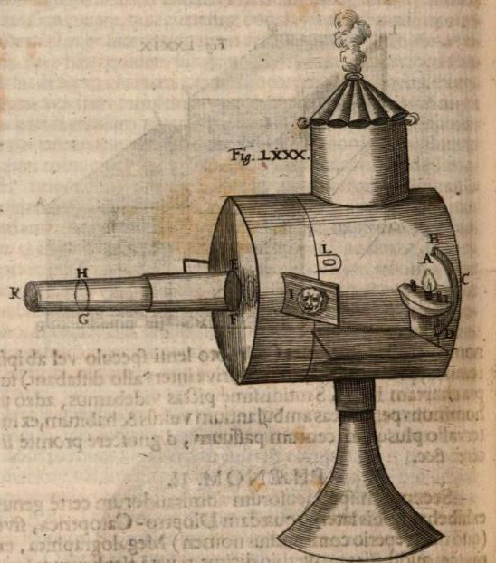

Originally the pictures were hand painted on glass slides. Initially, figures were rendered with black paint but soon transparent colors were also used. Sometimes the painting was done on oiled paper. Usually black paint was used as a background to block superfluous light, so the figures could be projected without distracting borders or frames. Many slides were finished with a layer of transparent lacquer, but in a later period cover glasses were also used to protect the painted layer. Most handmade slides were mounted in wood frames with a round or square opening for the picture.
After 1820 the manufacturing of hand colored printed slides started, often making use of decalcomania transfers. Many manufactured slides were produced on strips of glass with several pictures on them and rimmed with a strip of glued paper.
Various types of mechanisms were commonly used to add movement to the projected image:
Slipping slides: a movable glass plate with one or more figures (or any part of a picture for which movement was desired) was slipped over a stationary one, directly by hand or with a small drawbar (see: Fig. 7 on the illustration by Petrus van Musschenbroek: a tightrope walker sliding across the rope). A common example showed a creature that could move the pupils in its eyes, as if looking in all directions. A long piece of glass could show a procession of figures, or a train with several wagons. Quite convincing illusions of moving waves on a sea or lake have also been achieved with this method.
Lever slides: the moving part was operated by a lever. These could show a more natural movement than slipping slides and were mostly used for repetitive movements, for instance a woodcutter raising and lowering his axe, or a girl on a swing.(see: Fig. 5 on the illustration by Petrus van Musschenbroek: a drinking man raising and lowering his glass + Fig. 8: a lady curtsying)
Pulley slides: a pulley rotates the moving part and could for instance be used to turn the sails on a windmill (see: fig. 4 on illustration by Van Musschenbroek)